-

Healing Draught
Notes of wild mint and warm honey; a gentle heat blooms in the chest as torn flesh knits and bruises fade. Best served slightly warm for a quicker mend.
-
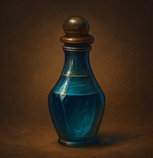
Elixir of Giant’s Strength
Smoky cedar with a trace of iron and storm-air; muscles swell with mythic might and footfalls ring like anvils. Best enjoyed with a responsible spotter.
-
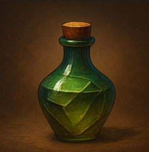
Mana Tonic
Crisp ozone over blueberry and bellflower; arcane reserves refill as fingertips tingle with spare sparks. Excellent between volleys of spellcraft.
-
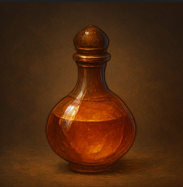
Invisibility Phial
Nearly flavorless with a ghost of lavender frost; a glassy veil slips over the drinker, footsteps whisper-quiet. Avoid rain, mud, and nosy cats.
-
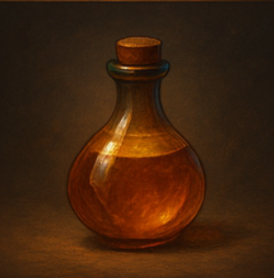
Fire Resistance Tonic
Toasted cinnamon and charcoal; a cool film settles beneath the skin, turning roaring heat into tolerable warmth. Favored by chefs and dragon diplomats.
-
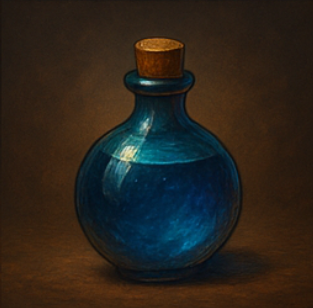
Frost Resistance Tonic
Peppermint with pine resin; winter’s bite becomes a brisk stroll as a hearth-warmth gathers in the bones. Ideal for polar parades and frosty feuds.
-
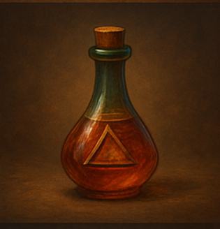
Elixir of Swiftness
Sharp ginger and lemon zest; joints click like clockwork as the world obligingly slows. Best paired with clear corridors and good decisions.
-
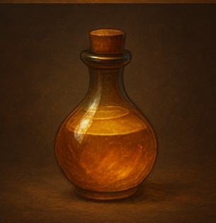
Night Vision Serum
Earthy mushroom with star-anise; pupils bloom like nightflowers and the dark reveals a hundred shades of indigo. Owls remain unimpressed.
-
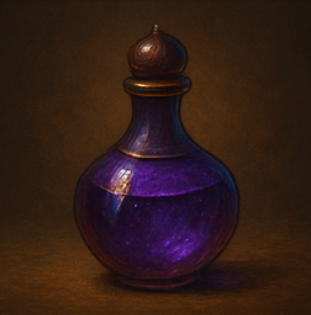
Stone Skin Serum
Wet slate and miner’s tea; the skin takes a granite grain while blows skid like rain on a roof. Expect a dignified heft to your stride.
-
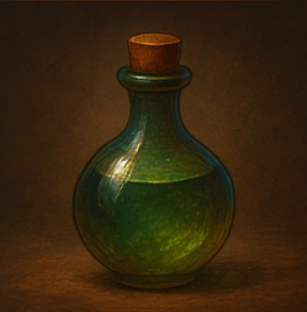
Water Breathing Philter
Sea-salt and kelp with a fizz of bubbles on the tongue; lungs learn the language of rivers and tide for an hour of easy drifting.
-
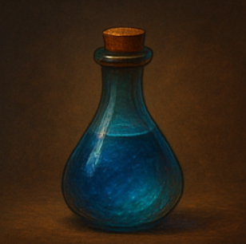
Universal Antidote
Bitter grapefruit rind and charcoal; poisons hush, venoms relent, and the tongue remembers it was never meant to be numb.
-

Luck Elixir
Clover and spun sugar; coins land kindly and fates lean your way—subtly, sweetly, and never twice in the same hour.
-
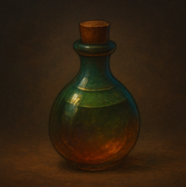
Elixir of Clarity
Chilled jasmine and green apple; thoughts line up like soldiers and truths gleam brighter than polished steel. Avoid before bedtime.
-
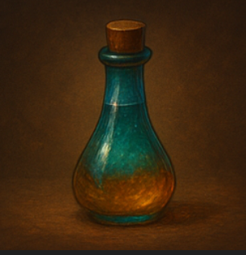
Berserker’s Brew
Smoked paprika and blackstrap molasses; a drumbeat rises in the ribs as courage outruns caution. Helmets recommended; furniture not responsible.
-

Phoenix Tears Vial
Warm saffron and sunrise citrus; vitality surges and the world smells briefly of new beginnings. Rarer than dragons that say “please.”
-
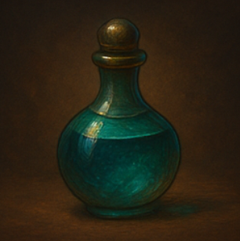
Sleep Draught
Chamomile, vanilla, and rain-on-stone; slumber descends like velvet curtains. Do not operate brooms after use.
-
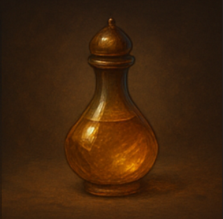
Dragon’s Breath Tonic
Cinnamon bark and ghost-pepper with a wink of sulfur; exhale a brief plume of theatrical flame. Outdoors preferred.
-

Vitality Serum
Rosemary, quince, and ember; fatigue lifts and color returns to the cheeks. Ideal for long campaigns and longer meetings.
-
Featherfall Philter
Candied pear with marshmallow; bones feel buoyant and descents turn delightfully floaty. Pair with tower tours and optimism.
-
Anti-Fatigue Draft
Roasted barley, chicory, and mint; fog lifts without the jitters, leaving a steady, companionable alertness. Approved by three royal HR departments.